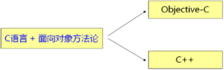
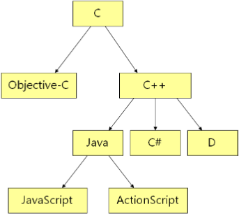
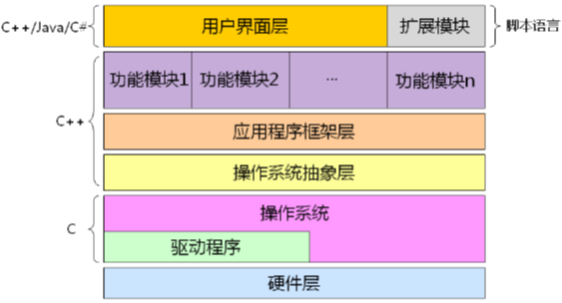
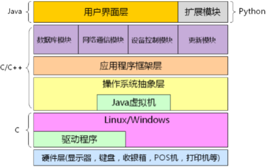

1，常见的观点：
1，并不是每个应届生都有机会写操作系统和驱动程序；
2，嵌入式系统也是软家系统，只不过是软件在出厂的时候已经被烧写到硬件中了，用户没有办法修改软件而已，因此嵌入式系统也是软件系统，C++还是应用的比较多的；
3，今天软件行业飞速发展，一种语言支撑职业生涯，那是不可能的，并且今天的驱动开发也成为软件行业比较小的领域，绝对不能有以后就从事某个职业的观点，这在以后是不足以支撑整个职业生涯的；
4，C 语言天生为开发操作系统而来的，Linus 大神一生都致力于系统开发，至于他而言，确实只用掌握 C 语言就够了，并且 Linux 也足够辉煌；
2，一些历史：
1，UINX 操作系统诞生之初是直接用汇编语言写成的；
2，随着 NINX 的发展，汇编语言的开发效率成为一个瓶颈；
1，系统越来越庞大，找一种语言来替代汇编语言开发 UINX；
2，1971 年，Ken Thompson 和 Dennis Ritchie 对解释性的 B 语言进行了改良，使其能够直接产生机器码，C 语言诞生；
1，语法进行改良；
2，解释型语言改编成编译型语言，直接能够编译成汇编语言；
3，UNIX 开始用 C 语言重写，同时 C 语言在实践过程中得到发展；
1，重写 UNIX 过程中，发现 C 语言各种不足，逐渐改善发展 C 语言；
3，C 语言特点：
1，C 语言是在实践的过程中逐步的完善起来的：
1，没有深思熟虑的设计过程；
2，残留了过多低级语言的特征；
1，指针直接操作地址；
2，通过地址值能够直接跳转到那个地址值上执行；
2，C 语言的目标是高效：
1，最终程序执行效率的高效;
2，开发的高效（相对于那个时代）；
4，软件方法论的发展：
1，面相过程程序设计：数据结构 + 算法：
1，主要解决科学计算问题，用于需求简单而固定；
2，特点：
1，分系解决问题所需的步骤；
2，利用函数实现各个步骤；
3，依次调用函数解决问题；
3，问题：
1，软件可重用性差；
1，软件应用到了日常生活中了，开发过程低下；
2，软件可维护性差；
1，修改 bug 后又引入新的 bug；
2，面相对象程序设计：由现实世界建立软件模型
1，将现实中的事物直接映射到程序中，可直接满足用户需求；
2，特点：
1，直接分析用户需求中设计的各个实体；
2，在代码中描述现实世界中的实体；
3，在代码中关联各个实体协同工作解决问题；
3，优势：
1，构建的软件能够适应用户需求的不断变化；
2，直接利用面向过程的方法的优势而避开其劣势；
1，大的方面是面向对象的映射，小的方面还是可以应用面向过程的方法；
5，C 语言的加强：
1，当面向过程方法论暴露越来越多的缺陷的时候，业界开始考虑在工程项目中引入面向对象的设计方法，而第一个需要解决的问题就是：
1，高效的面向对象语言，并且能够兼容已经存在的代码：

2，C 语言和 C++ 并不是对立的竞争关系；
1，C++ 是 C 语言的加强，是一种更好的 C 语言；
2，C++ 是以 C 语言为基础的，并且完全兼容 C 语言的特性；
3，学习 C++ 并不会影响原有的 C 语言知识，相反，学习 C++ 可以让我们学习到更多的软件设计方法；
6，学习 C++ 的优势：

1，C++ 天生支持 C，所以保持了过多低级语言的特性；
2，对 C++ 进行剪裁，没有低级的以及面相过程的语言特性，得到 Java 语言，更纯正的面向对象语言，语法上也更简单、更易掌握；但是 Java 是半编译语言，需要虚拟机来运行，使得其效率比 C/C++ 要低很多；
3，微软想得到 Java 而不得，于是开发了 C# 语言，语法和运行机理上面几乎 和 Java 一模一样，因此 Java 和 C# 是竞争对手，优势劣势差不多的；缺陷都是运行效率低、半编译；
4，语法特性好、开发效率高、比较简单，编写程序执行效率高，于是诞生了 D 语言；
5，Java 是半编译型的，有一个编译过程，编译完成之后来运行，运行效率又不高；好用、开发效率高、不需要编译、直接写了就可以运行，于是 JavaScrip和 ActionScript 等脚本语言诞生了；
7，为什么要为以后学习其他语言做准备？
1，现代软件产品架构图：

1， 适用于各种类型的软件产品，包括嵌入式产品；
2，硬件层：
1，对于现在的系统而言，肯定需要硬件层的支撑，所以在当代软件产品架构图的最下面一定是硬件层；
3，操作系统和驱动程序：
1，一般而言用 C 语言完成的，其天生用来写操作系统；
4，操作系统抽象层：
1，这一层可有可无、非必须，但是移植性好的软件产品一定需要这一 层，其把操作系统提供的接口（函数）利用 C++ 的面向对象的特性做一层封装，封装之后再在这一层的基础上来设计应用程序 的框架，这样如果我们的产品需要移植到新的操作系统之上，我们只需要重新更改操作系统抽象层，在这之上的软件层都不用更改了；
5，应用程序框架层：
1，自己开发；
6，功能模块：
1，在应用程序框架层之上开发功能模块；
7，用户界面和扩展模块；
2，上面的 C 语言族中的每种语言基本上都会涉及到；
8，商场收银系统架构图示例：

1，Java 虚拟机某种意义上是操作系统抽象层；
2，这个简单的系统用了很多种语言写而没单独用 C/C++ 语言写，是因为后期维护有问题；
3，后期商场活动等原因要跟新系统，可以利用跟新模块实现，通过服务器、脚本等来实现；
9，现代软件产品的特性：
1，系统一般是由多种语言写成的；
2，系统架构的目标是拥抱用户需求的变化；
3，系统拥有较好的移植性；
4，系统能够方便的部署和更新；
1，另一个商家也需要这个收银系统，则只用很小的修改就可以了，在更短的时间、创造更多的价值；
5，操作系统的修改和驱动程序的开发在现代软件产品中占据的比重越来越小；
1，驱动程序也是一种类型的程序，没有什么特别的地方；
10，学习 C++ 的意义：
1，C++ 是一种更强大的 C，通过学习 C++ 能够掌握更多的软件设计方法；
2，C++ 是 Java/C#/D 等现代开发语言的基础，学习 C++ 后能够快速掌握这些语言；
3，C++ 是各大知名软件企业挑选人才的标准之一；
11，小结：
1，所有的软件系统都是为了满足用户的需求而开发的；
2，对于一个开发团队而言，在短期内开发出用户满意的软件系统是其核心竞争力的体现；
3，对于一个软件开发者而言，能够胜任系统中任意一个模块的开发是其核心价值的体现；
4，对于一个架构师而言，掌握各种语言的优势并合理运用到系统中，由此简化系统开发，是其核心价值的体现；